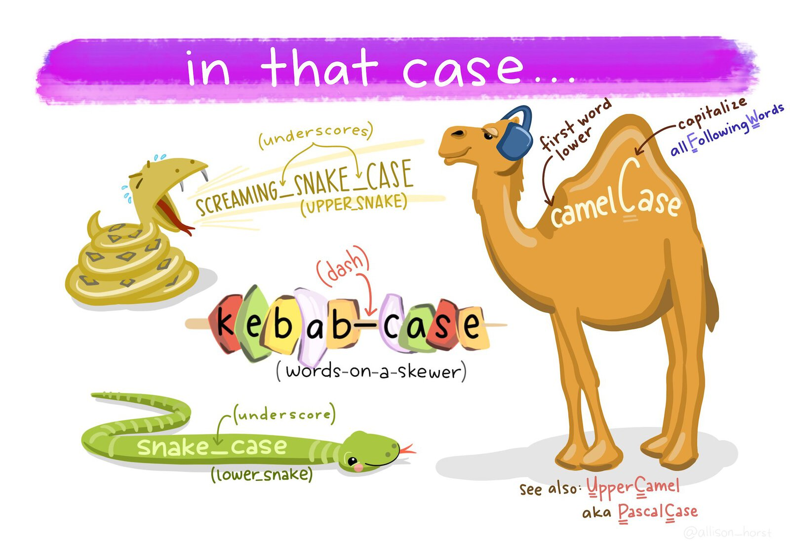

5 Code with style
This chapter explores the importance of writing clean, readable code in R. You’ll learn practical techniques such as organizing your code, using consistent naming conventions, and spacing effectively to improve clarity. The chapter also covers structuring functions and following style guidelines, which make it easier to fix problems with your code. Whether you’re working solo or sharing projects, these tips will help you write code that’s both efficient and accessible. Let’s get started with coding that works for you and others!
5.1 Introduction
Now that you’re beginning to write code in R, it’s time to introduce a few conventions for how to write code so that it’s easier to read. This is important because “good coding style is like correct punctuation: you can manage without it, butitsuremakesthingseasiertoread”.
Writing readable code is particularly important because it is much easier to find mistakes in well-written code, and your code will inevitably contain mistakes (everyone’s code contains mistakes!). That means writing readable code isn’t just a matter of style but a key part of successfully using a programming language like R to do work.
Writing code has been compared to performing in a band:
I liken the situation to a group of musicians trying to form a band. Each one comes in believing that their way of doing things is best (their “method” or “process”). The band will struggle so long as everyone is trying to do their own thing. It’s impossible to create good music unless everyone in the band agrees on the tempo, the style and who should take lead during a song. Anyone who has ever heard a high school band perform knows this to be true. Unless everyone is on the same page, you aren’t going to accomplish much.
You might be relaxing at this point, thinking “that isn’t a problem for me, because I’m the only person who is going to be working on my code”. If so, think again. It’s been said that in data science that there are always at least two people working on a project: the you who is working on the code now, and the past you who has worked on the same code previously. The problem is that past you does not answer emails. So you can save future you a lot of hassle later by writing readable code.
This chapter introduces some basic guidelines on formatting your code. Some sections of this chapter have been adapted from The tidyverse style guide, which provides lots more detail. All the code you see in the chapters in this book was written following this style guide.
5.2 Organising files in a project
In Section 1.4.2 we learned how to create an RStudio project. Projects in RStudio are a way of keeping your analysis organised. When you work inside an project, RStudio will do various things in the background that make it easier to stay organised. For example, RStudio will save the project’s state: if you have to close the project and re-open it later, all the files that you had open before will re-open, too.
I strongly recommend that you use projects for everything you do in RStudio. There are no real costs to using projects and the benefits can be substantial, so try to get used to using them for all your analysis. Have one RStudio project for each project that you work on, for example you might have one project for each research report that you write or piece of analysis you do on a particular topic. For this purposes of this course, do all your work inside the single project you created in Section 1.4.2.
Once you have created an empty project, you can create some directories within it to organise your files. There are lots of suggestions online for how to organise your files within a project – see this summary of project-organisation methods if you would like to understand the different options available – but the most important thing is that you have separate places to store:
- the original/raw data that you have obtained (e.g. by downloading it from a website or extracting it from a police database),
- the results of any data wrangling that you do,
- files containing the code that you use to wrangle the data and conduct your analysis, and finally,
- the outputs from your analysis, including tables, charts and reports.
Putting each of these four types of files in a separate directory within the project directory makes it much easier to keep track of them. We can create the necessary directories directly in R using the dir.create() function. You can run this code in the R Console whenever you create a new project:
Because we are running these commands from inside an RStudio project, these directories will automatically be created as subdirectories of the project directory we have already created – this saves a lot of moving between directories, and is another reason to use RStudio projects.
Once you are working within an RStudio project, RStudio knows to treat any reference to a file or folder as being relative to the folder that contains the RStudio project. So, for example, if your project for analysis of thefts in Vancouver is stored in a folder called /Documents/crime_mapping/vancouver_thefts/ and you run the R code read_csv("source_data/vancouver_thefts.csv"), RStudio knows that you mean to open the file stored at /Documents/crime_mapping/vancouver_thefts/source_data/vancouver_thefts.csv. This can save you lots of time working out how to reference a particular file location in R.
If you have learned some R before this course – especially if it was some time ago or taught by someone who themselves learned R a long time ago – you might have learned to start each analysis by setting a working directory using the setwd() function or the Session > Set Working Directory menu option in RStudio. Not only do you not need to do this when you keep your analysis in an RStudio project, you should not set a working directory in R because it can have several unpleasant side effects.
The biggest problem with manually setting a working directory in your R code is that if you share your code with someone else then it is likely the setwd() function will produce an error because that person’s computer will have a different directory structure to your computer. So if the first line of your R script is setwd("/Users/uctzaaa/Documents/crime_mapping_vancouver_thefts/") because that is the location of the working directory on your computer, this will produce an error on another computer that does not have a /Users/uctzaaa directory (i.e. it will cause an error on almost every computer in the world). This makes it much harder to get help on your code, for example if you are using a reproducible example (which we will learn about later in this chapter) to show someone else a problem with your code.
Setting a working directory using the Session > Set Working Directory menu buttons in RStudio has the additional problem that it’s not possible to work out from reading your R code that you have set the working directory that way. So if someone else (or you, in a few weeks when you’ve forgotten) tried to run your code and it produced an error, there would be nothing in the code to tell them that they needed to change the working directory.
For more detail on why you should not set a working directory manually, read this blog post on project-oriented workflow.

Typing out the dir.create() function four times is somewhat tedious, and certainly would be if we needed to create (say) 10 directories rather than four. One way to make this code shorter is to use the walk() function from the purrr package, which is part of the tidyverse suite of packages. walk() allows us to run any function several times, each time using a different input, one at a time. The function is called walk() because it ‘walks’ through all the items in a vector of inputs, applying the same function to each of them in turn.
The general format of calls to the walk() function is:
So if we wanted to create the same four directories using walk(), we could run this single line of code in the R Console:
Note that the function name dir.create is not followed by a pair of parentheses when it is used inside walk().
walk() is a very powerful function and this is only a very simple example of what it can do, but we will return to it when we need it again.
walk()?
If you have learned any other programming languages, you might remember that the usual way to apply the same function to a series of values is to use a ‘loop’, which (depending on the language) might be called a ‘for loop’ or a ‘foreach loop’. While you can create ‘for’ loops in R that would do the same thing as the walk() function, it is generally better not to use ‘for’ loops in R. This is both because loops are often slower – which can be particularly important when analysing large spatial datasets – and because functions like walk() can easily be used inside pipelines constructed with the |> operator.
If you’re ever tempted to use a ‘for’ loop in R, stop and think about how to achieve the same result using a function like walk().
5.3 Naming files
The final step in organising your work so that you can analyse data and stay sane is to give every file you create a name that will help you find it later on. To do this, stick to three principles:
- make your file names easily readable by computers,
- make your file names easily readable by humans, and
- use file names that will by-default by sorted in a meaningful way.
Computers can increasingly read file names that contain any characters you can think of, but many different characters make referencing your file names in your code more difficult than need be. To keep your code simple, stick to files names that contain only lower-case letters (so you don’t have to remember if each letter is upper-case or lower-case), numbers, hyphens (-) and underscores (_) – that’s it. If the language you are writing in uses letters with accents such as é or ü, its best to not use those accents in file names. So, instead of having files with names like this:
John's raw data.csv
figure 4.jpg
DüsseldorfCrimeData.xlsxuse the names:
john_raw_data.csv
figure_4.jpg
dusseldorf_crime_data.xlsx
To make your files easily readable by humans, make sure the file name describes what the file contains or does. So giving a file the name crime_data_atlanta_2020.csv is much more useful than calling the same file data_file_23.csv. If you’ve been using computers for a while (or you’ve been taught by someone who has), you may have been trained to use very short file names because old computers could only handle very short names. Fortunately, modern computers can handle much longer file names, so it’s generally safe to use a few extra characters to describe what your file is or does. File names are also easier to read if words are separated by a hyphen or underscore: police_recorded_robbery_data_2020 is much easier to read than policerecordedrobberydata2020.
If your files have a meaningful order, it’s useful to reflect this in the file name. Imagine you have three code files: one for data wrangling, one for carrying out spatial analysis tasks on that wrangled data and a third one for creating charts to show the results of the analysis. You cannot run the analysis code until the data wrangling is complete, so the files have a meaningful order.
When you look at these files in the Windows File Explorer, Mac Finder or RStudio Files tab, they are likely to appear out of order. For example, they might be:
analyse_data.R
create_charts.R
wrangle_data.RIf you add a number to the start of the file name to show which order to use the files in, things become clearer:
01_wrangle_data.R
02_analyse_data.R
03_create_charts.RNote that the numbers are padded with a zero so that they will still be sorted in the correct order if you end up with more than 10 files in my workflow (I’ve only used one zero for padding because I don’t expect to have more than 100 script files).
5.4 Organising your code
In Section 2.2 we learned about the difference between temporary code that we type in the R Console in RStudio and permanent code that we type in a .R script file. In this section we will learn how to organise the permanent code within a script file so that it is easier to use.
5.4.1 Leaving notes for future you
Within each .R file, you can make your code easier to understand in several ways. First, add a comment (one or more lines beginning with # followed by a space) at the top of the file to explain what the code in that file does. This will make it easier for you to know that you’ve found the right file if you are looking for it in a few weeks when you’ve forgotten (which you will) what file contains what code.
Comments should usually start with a capital letter and follow normal English rules of punctuation, spacing, etc.
5.4.2 Letting your code breathe
Unless your code is very simple, it will probably consist of several separate tasks that are completed one after another. For example your code might download some data, wrangle it and then plot it on a map. In that case, it can be useful to split your code up into blocks by leaving a blank line between the code needed for each task. For example, if we take the code:
pacman::p_load(tidyverse)
crimes <- read_csv("crime_data.csv")
crimes <- janitor::clean_names(crimes)
burglaries <- filter(crimes, type == "burglary")
burglaries <- mutate(burglaries, month = month(date_time))
ggplot() +
geom_point(aes(x = lon, y = lat, colour = month)) +
theme_void()it becomes easier to read if we split the code up into four tasks: loading the necessary packages, reading the data, wrangling the data and plotting the data.
pacman::p_load(tidyverse)
crimes <- read_csv("crime_data.csv")
crimes <- janitor::clean_names(crimes)
burglaries <- filter(crimes, type == "burglary")
burglaries <- mutate(burglaries, month = month(date_time))
ggplot(burglaries) +
geom_point(aes(x = lon, y = lat, colour = month)) +
theme_void()Since data wrangling involves several steps and each function uses the result of the previous step, we could use the pipe operator |> to make that code a bit cleaner:
pacman::p_load(tidyverse)
crimes <- read_csv("crime_data.csv")
burglaries <- crimes |>
janitor::clean_names() |>
filter(type == "burglary") |>
mutate(month = month(date_time))
ggplot(burglaries) +
geom_point(aes(x = lon, y = lat, colour = month)) +
theme_void()You can see that in this code, making sure there are no blank lines between lines of code in a pipeline or a ggplot(), and putting a blank line between each pipeline or stack, makes it much easier to see where one task ends and the next begins.
5.4.3 Header comments
If your code includes very long tasks (e.g. where the code takes up more than a full screen on your computer), you might want to use header comments to divide your code into sections. You can do this by writing a comment that is followed by four of more hyphens (----):
RStudio will recognise comments that end in four or more hyphens as being headings, and will create a table of contents for your code. You can use this to move between headings by clicking on the Jump To menu at the bottom of the Source panel in RStudio:

In general, writing code that is readable is more important than writing the shortest code possible, so don’t be afraid to let your code breathe by using space to separate your code into meaningful chunks.
How do you write a comment in R?
5.5 Naming objects
R objects can have any name you like, as long as the name starts with a letter and contains only letters, numbers, dots (.) and underscores (_). That said, you will find coding easier if you follow a few conventions.
- Use only lower-case letters in the names of objects, which avoids you having to remember whether a particular letter was upper- or lower-case.
- Use snake case (
object_name, with words separated by underscores) for object names rather than camel case (objectName) or kebab case (object-name). - Don’t use dots in object names.
- Don’t give objects the same names as R functions, because re-using function names makes reading your code more difficult.

Just as crime_data_atlanta_2020.csv is a more-useful file name than data_file_23.csv, you will find it easier to read your code if you give your objects meaningful names. So when you load data into R (e.g. with read_csv()) don’t just call it data (not least because there is a function named data()) but instead give it a name like atlanta_crimes if it contains (for example) crime data from Atlanta.
Which of these would be a good name for an object containing data on homicides in Abu Dhabi?
5.6 Spacing
Spacing out code makes it much easier to read, but (just as in any language) code is easiest to read if spaces are used where people expect them to be by convention.
Mostly in R, we use spaces where we would expect them in English: after commas but not before, outside parentheses but not inside, etc.
# Good
read_csv("crime_data.csv", skip = 4)
# Bad
read_csv("crime_data.csv",skip = 4)
read_csv("crime_data.csv" ,skip = 4)
read_csv("crime_data.csv" , skip = 4)Don’t put spaces inside parentheses, or between the names of functions and the parentheses:
Do put spaces around most operators (==, +, -, <-, etc.), including either side of = when specifying the values of function arguments:
# Good
height <- (feet * 12) + inches
mean(x, na.rm = TRUE)
# Bad
height<-feet*12+inches
mean(x, na.rm=TRUE)Although there are some operators that shouldn’t have spaces around them: $, @, [, [[, ^, : and ?.
Which of these lines of code has the optimal spacing?
5.7 Functions
We’ve now got used to calling functions to do things in R, like calling read_csv() to load data from a CSV file or filter() to choose certain rows from a dataset. We know that we can change the behaviour of functions by using arguments. For example, we can wrap a string of text into shorter lines using the str_wrap() function from the stringr package. str_wrap() needs two arguments: the text to be wrapped into multiple lines and the maximum length of a line of text before the next word is wrapped onto a new line. These arguments are called string and width, so we can call the function as:
The string argument provides the data that the str_wrap() function will work on, while the width argument provides the details of how that work should be done. Since the data argument to a function is typically required (the function makes no sense without it) and is often the first argument, you can omit the name of data arguments to functions. For all other arguments, it is best to give the argument name. So to use str_wrap(), you can write:
In general, you should keep lines of code to a maximum of 80 characters long, since they can easily fit on most screens and are easy to read. When calling a function, put all of the parameters on a single line if they will fit into 80 characters or less:
But if the function call is longer than 80 characters, use one line each for the function name, each argument, and the closing ), with the arguments indented by two spaces. This makes the code much easier to read.
# Good
do_something_very_complicated(
something = "that",
requires = many,
arguments = "some of which may be long"
)
# Bad
do_something_very_complicated("that", requires, many, arguments, "some of which may be long")
do_something_very_complicated("that", requires, many, arguments,
"some of which may be long"
)One exception to the 80-character rule is lines of code that contain URLs or file paths. Adding spaces or line breaks in the middle of URLs or file paths would mean the code was unable to find the file, so if a line contains a URL or file path then it can be allowed to extend beyond 80 characters:
# Good
read_csv("http://www.a-long-web-address.com/with-multiple-parts/that_mean_it_is_longer_than_80_characters.csv")
# Bad
read_csv("http://www.a-long-web-address.com/with-multiple-parts/
that_mean_it_is_longer_than_80_characters.csv")It’s very uncommon for URLs to have spaces or line breaks in them, but both spaces and line breaks are perfectly valid characters in a URL. Because of that, when you use a piece of software (such as a web browser) to access a URL, that software will convert any spaces in the URL into a character code (%20) representing a space. That means that if you run the R code:
# Bad
read_csv("http://www.a-long-web-address.com/with-multiple-parts/
that_mean_it_is_longer_than_80_characters.csv")The URL that R tries to access is actually:
http://www.a-long-web-address.com/with-multiple-parts/%0A%20%20%20%20%20%20%20%20%20%20that_mean_it_is_longer_than_80_characters.csvSince no file exists at that URL, adding spaces or line breaks into a URL causes a ‘file not found’ error.
One mistake that people often make when splitting a function across multiple lines is to leave the closing parenthesis ) at the end of the last line of the function, like this:
# Bad
do_something_very_complicated(
something = "that",
requires = many,
arguments = "some of which may be long")The problem with this is that it makes it harder to see where a particular function ends. Instead, put the closing parenthesis on a line on its own, indented with the same number of spaces as the first line of the function:
# Good
do_something_very_complicated(
something = "that",
requires = many,
arguments = "some of which may be long"
)This makes it much easier to see where a function call starts and ends.
When combining multiple functions using the pipe operator (|>), put each function on a single line, with all but the first line indented by two spaces:
Once you learn about other types of R code you will need to know how best to style it, but we will learn about those when we need to.
If a function is written across several lines of code because it will not fit on one line, where should the closing parenthesis ) at the end of the function be placed?
5.8 Styling your code automatically
You can get help on styling your R code using the styler package, which can automatically format your code for you. After you install the styler package with the code pacman::p_install("styler"), you can style your code by:
- selecting the code you want to style,
- opening the
Addinsmenu at the top of the Source panel in RStudio, - clicking ‘Style selection’ in the ‘Styler’ section of the list of addins.

RStudio will also try to help style your code as you type, for example by automatically indenting lines.
5.9 In summary
You now know how to write your R code so that it is easy to read, which makes it much easier to understand. Understanding code when you read it is important because it allows you to work out what the code is trying to achieve and because it makes it much easier to find and fix problems when your code is not behaving as you want it to.
Writing readable, understandable code is important. To find out more about this, read some of these articles:
- Why coding style matters by Nicholas Zakas.
- The tidyverse style guide by Hadley Wickham, which is the basis for the rules outlined in this chapter.
Answer these questions to check you have understood the main points covered in this chapter. Write between 50 and 100 words to answer each question.
- Why is maintaining a consistent coding style important in R? Explain how it benefits both the person writing the code and others who may need to read or edit it later.
- What are some best practices for organizing your code different sections? Provide examples of how comments and spacing can make your code easier to navigate.
- Describe the guidelines for naming objects in R. Why is it important to avoid using names that clash with existing R functions?
- What are the key rules for spacing in R code? Provide examples of good and bad practices when spacing around operators, commas, and parentheses.
- Explain how to format a function call that spans multiple lines. Why is it important to place the closing parenthesis on a separate, indented line?
On Perl from Three Panel Soul. ‘File Organization: Naming’ by Data Carpentry licensed under the Creative Commons Attribution licence. XKCD.com comic ‘Documents’ licensed under the Creative Commons Attribution-NonCommercial license. The tidyverse style guide licensed under the Creative Commons Attribution-ShareAlike licence. Artwork by @allison_horst. Some content on this page contains public sector information licensed under the Open Government Licence v3.